【國華街美食】必吃在地美食推薦總整理給大家參考一番
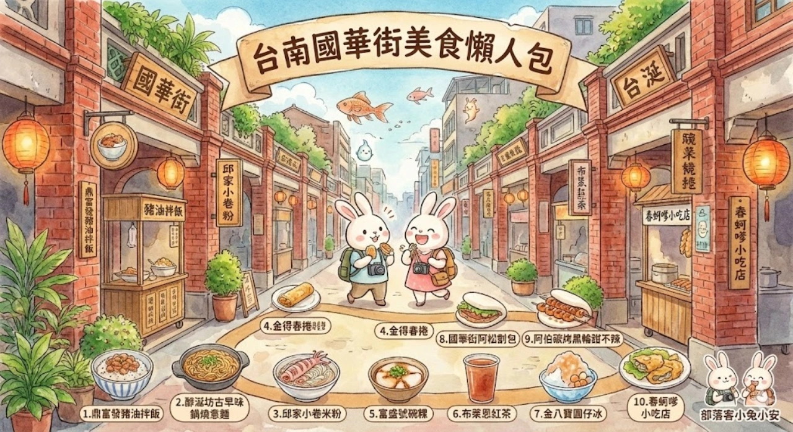
台南的國華街到底有哪些不可錯過的美食？這篇為你精選整理最值得一試的「國華街美食」清單，讓你吃遍人氣必吃美味！國華街上美食琳瑯滿目，根本三天三夜也吃不完。推薦必吃店家包括富盛號碗粿、金八寶、布萊恩紅茶、金得春捲，以及春蚵嗲等，通通都是網路上超夯的人氣名店。來到國華街，絕對不能錯過這些經典美味，一次吃個過癮才算來過！
國華街美食：交通停車

國華街美食交通資訊，自行開車前往的話，建議將車停在海安路上的地下停車場，步行前往國華街相當方便。若搭乘火車，可從台南車站出站後步行約25分鐘抵達，但建議直接搭乘計程車前往，省時又輕鬆。使用衛星導航時，直接設定「國華街」即可抵達目的地。國華街美食是馬路兩旁店家，開車族可停在圓環或海安路，步行五分鐘到達國華街美食。
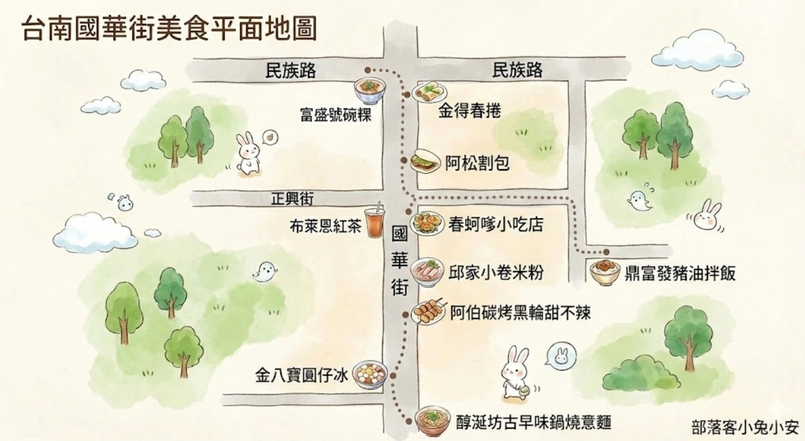
國華街的美食非常集中，主要分布在國華街靠近民權路三段前後這一大段路上。沿途走逛，不論是小吃、飲料還是特色餐點，都能一一發掘，是台南美食愛好者絕不能錯過的寶地。
2026國華街美食推薦清單
1.鼎富發豬油拌飯
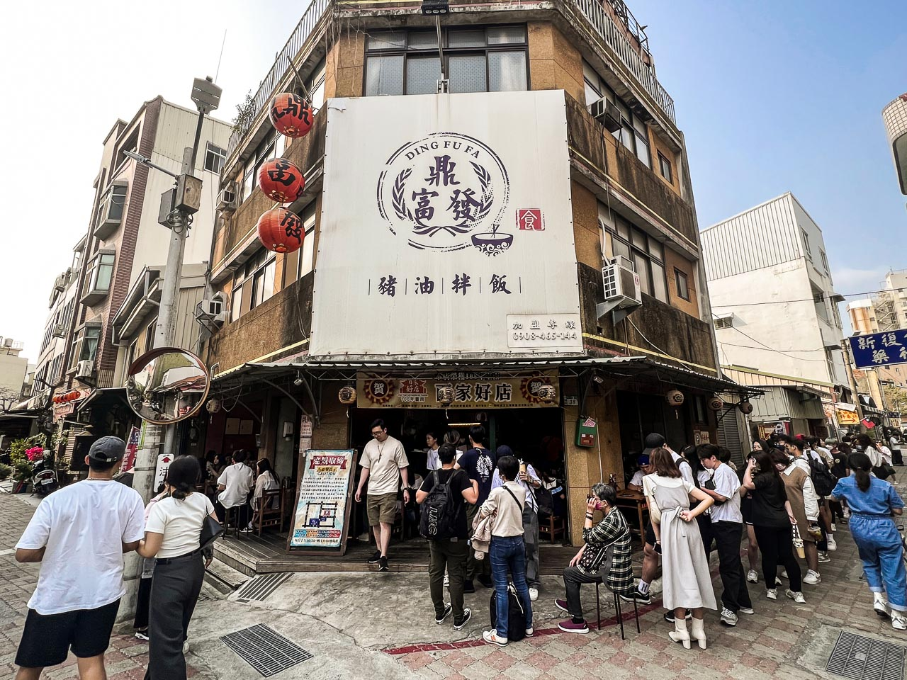
「國華街美食」推薦鼎富發豬油拌飯，菜色皆是現場烹調保證好吃，保證讓你吃得安心又開心，來這裡絕對不能錯過豬油拌飯、雞肉串和丸子湯，保證每一道都無雷！

用餐環境就是比較復古一點的小吃店，注意的是沒有冷氣空調，夏天來吃肯定很熱，然後桌位數蠻多的，但據說還是無法消化掉假日的用餐人潮。
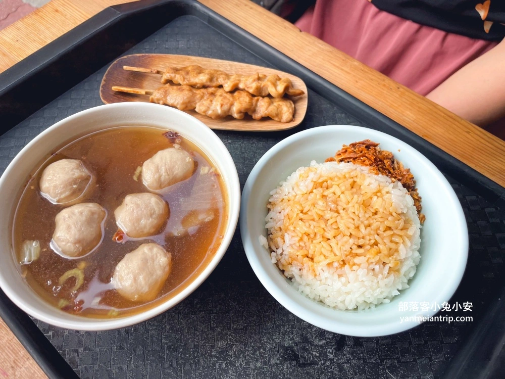
這樣是一個套餐，有飯有湯有肉，重點是只要110元實在有夠便宜的！
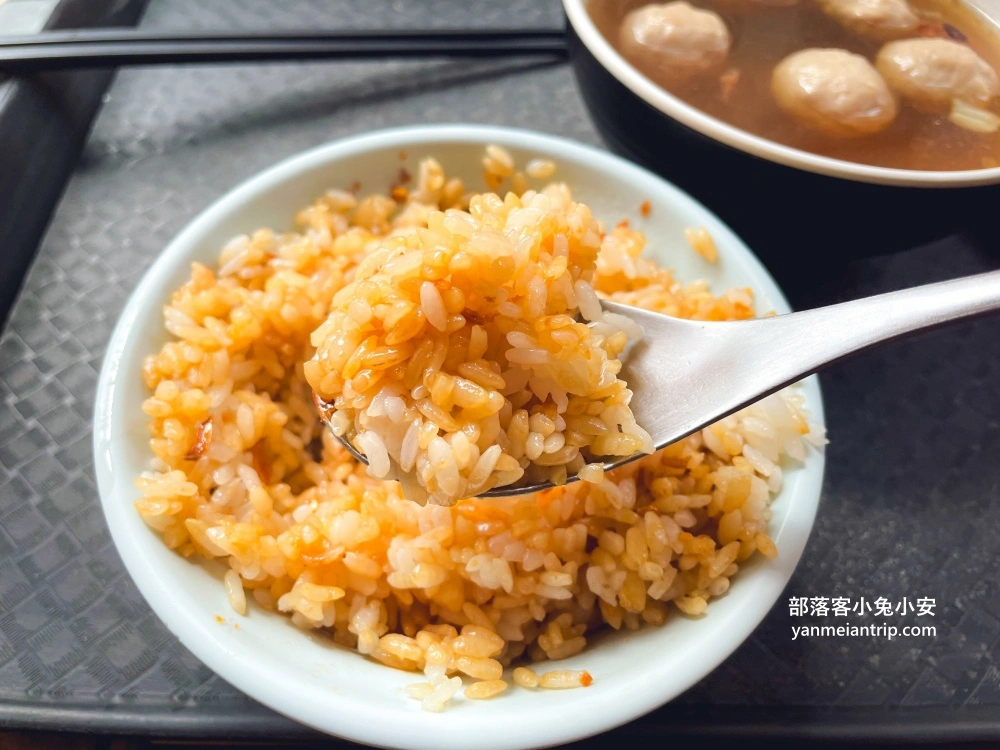
真的算很好吃！米飯煮的超棒又Ｑ又香，加上有不會太顯油膩的豬油浸潤其中，攪拌均勻送入嘴內，口中立馬香氣四溢。
餐廳名稱：鼎富發豬油拌飯
地址：台南市中西區大德街38號
營業時間：10:30–19:30
2.承樑老黑糖滷味

主打的是外面少見的黑糖滷製，不僅香氣特別濃郁，每一種滷味都呈現出一種亮晶晶的琥珀色，看著就讓人猛吞口水，這次直接來到他們的店面選購，發現環境真的乾淨到沒話說，所有的滷味都是職人現滷，經過真空包裝才送到客人手上。不管是自己吃還是當作伴手禮送人，都超級有面子！

小兔偷偷跑去廚房看，天啊！那一鍋正在翻滾的豬腳也太壯觀了吧！一整鍋熱氣騰騰的滷汁，飄散出淡淡的黑糖與中藥香氣，每一塊豬腳都滷到色澤均勻，那個Ｑ彈的模樣，光看照片就覺得香！
店名：承樑老黑糖滷味
地址：臺南市中西區忠義路二段223號1樓
電話號碼：0905 169 009
營業時間：10:00-18:00
公休時間：星期一公休
3.邱家小卷米粉

「國華街美食」推薦邱家小卷米粉，新鮮小卷入口，彈牙好咬斷，絕對不會像是咬橡皮筋一樣難吃，湯頭鮮美甘甜，略帶點海鮮味，內用要排30分鐘起跳不過份，要注意是目前已經搬到新的店址了，台南市中西區國華街三段251號。

小卷看起來好新鮮喔！外表的光澤正閃閃發亮。
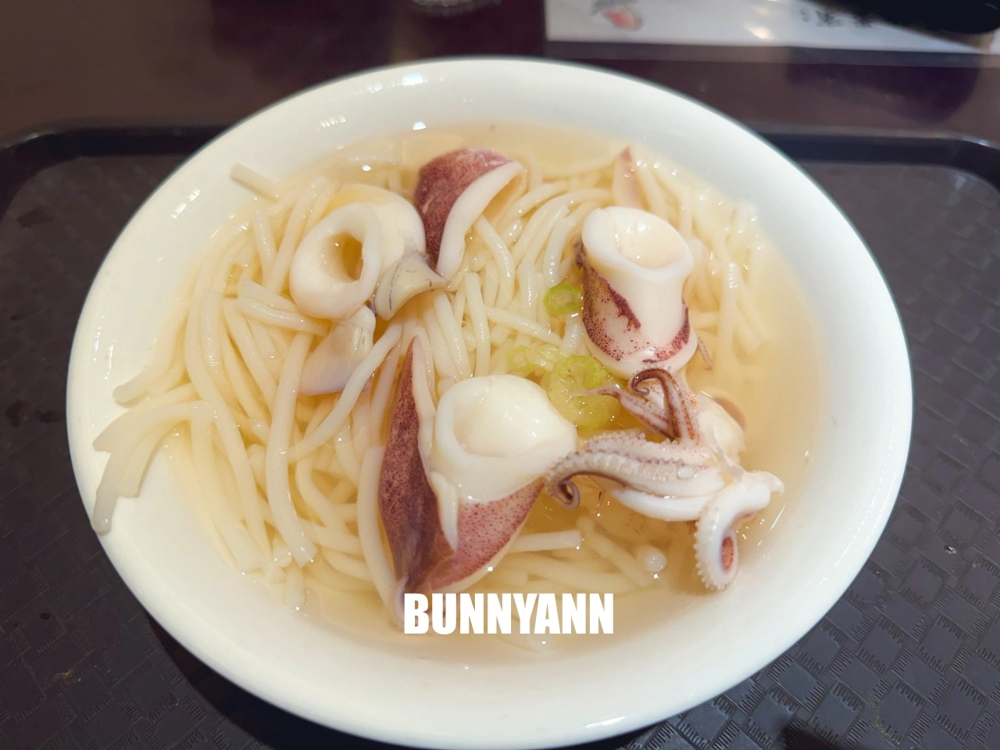
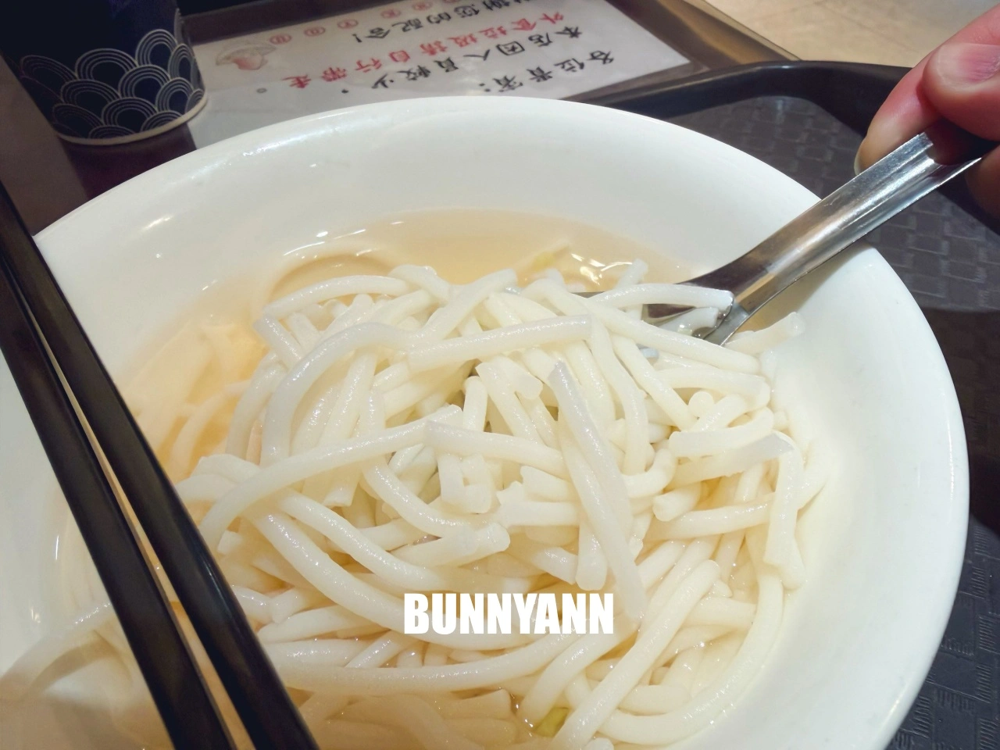
不用等很久餐點就上桌，邱家小卷米粉這一碗120元。你們看這個小卷每一塊都切得很厚實， 咬下去那種脆口的感覺真的騙不了人。這就是產地直送的新鮮啊～完全不需要多餘的調味就很甜。
店名：邱家小卷米粉
地址：臺南市中西區國華街三段251號
電話號碼： 06 221 051
營業時間：11:00-17:00
公休時間：星期一公休
4.金得春捲
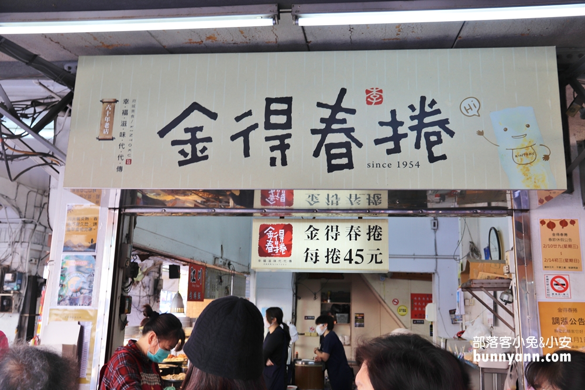
「國華街美食」推薦超人氣的金得春捲！每一捲只要45元，內餡豐富、多層次，CP值超高。因為太受歡迎，經常大排長龍，建議一早就來卡位，才能輕鬆享用這道在地人氣美味。
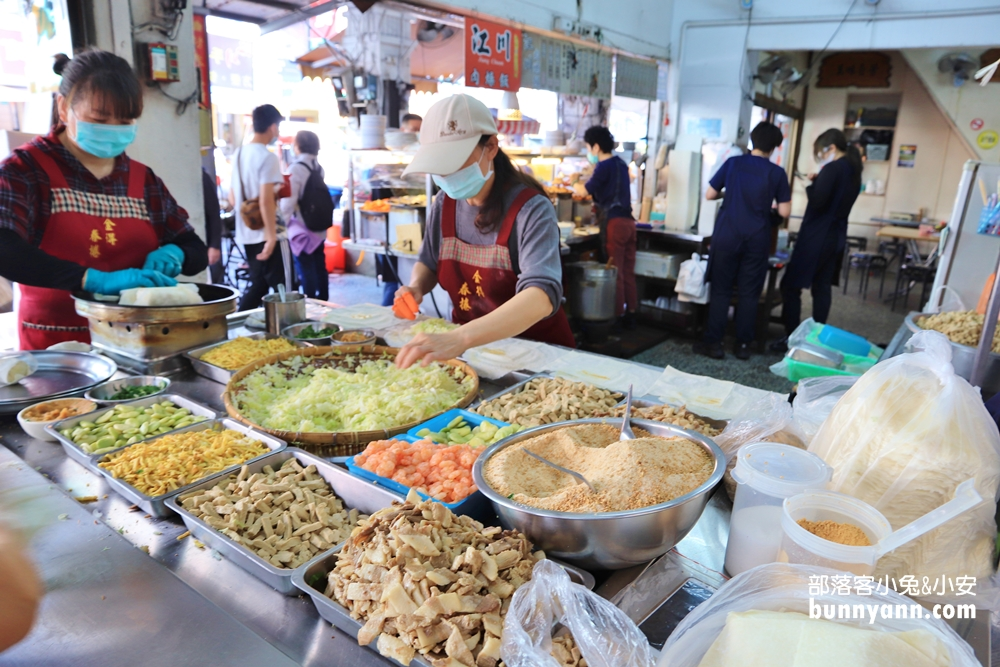
大陣仗的內餡好繽紛，光看到花生粉就加分很多！花生粉真的是靈魂角色。
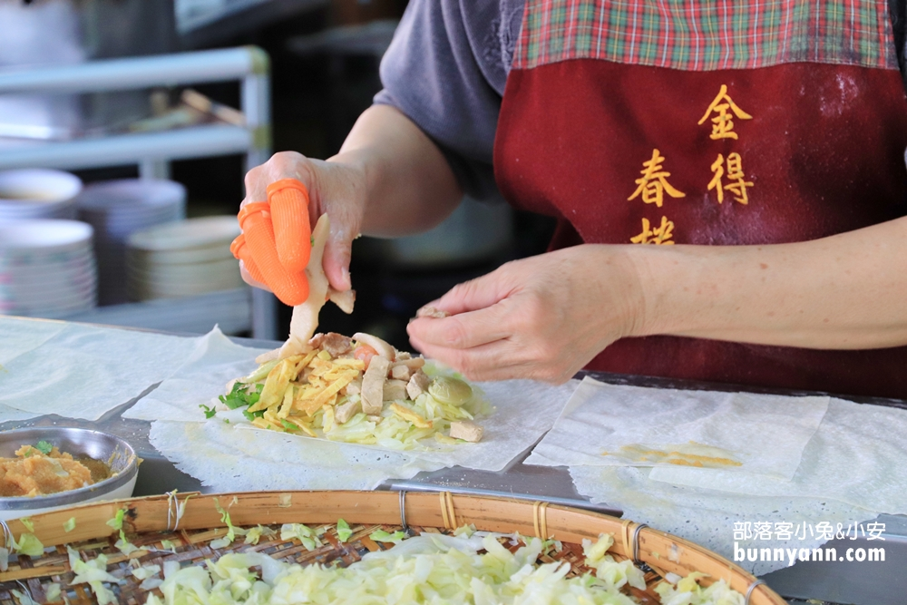
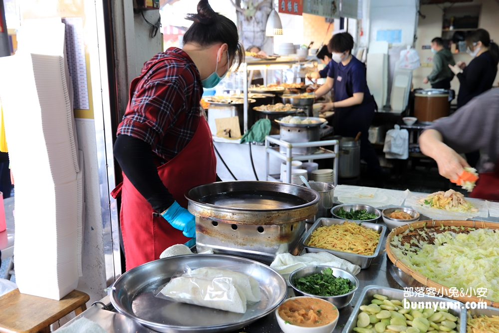
包好後還會在煎台上過一下，確保拿在客人手上是溫熱的，這樣才是春捲最佳食用溫度。
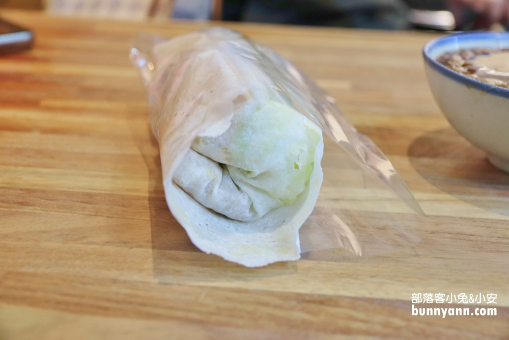
捲起來超級厚的啦！這一個吃下肚基本上就飽了，不用想再去別家吃東西。
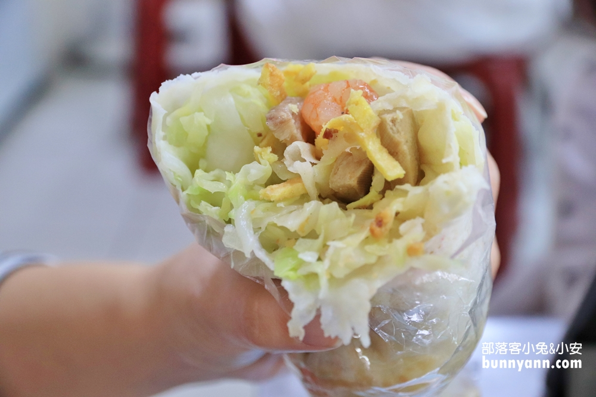
你看看這內餡都爆開了，有蝦子、生菜、豆皮之類，口感還不錯吃，但真的要趁熱吃，冷掉會爛爛的。
店名：金得春捲
地址：台南市中西區民族路三段19號
營業時間：07:00-17:00
公休時間：星期二公休